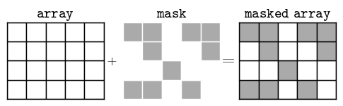

3.1 Introduction to NumPy#
Introduction#
NumPy is a python library which supports array types, which are very useful to numerical computations
Arrays are N dimensional: 1d (vector), 2d (plane),…,N dim
Many packages use numpy arrays to store data
Arrays can be used to make calculations in one command, without loops or list comprehension.
This is known as vectorisation
Using vectorisation will make your code faster, and easier to read.
Arrays are (generally) faster than lists.
See more in this guide: rougier/from-python-to-numpy
What is vectorisation?#
Say you want to calculate an array of values array2, based on your original data in array1.
Vectorised example:
array2 = array1 * k + c
Non-vectorised example, requires a loop:
for i in range(len(array1)):
array2[i] = array1[i] * k + c
Without vectorisation, multi-dimensional arrays would need multiple nested loops.
Do we still need lists?#
Lists can have different objects as elements. Arrays are homogenous.
example_list = [number, string, cat, dog]
example_array = [cat1, cat2, cat3]
Lists can be nested
nested_list = [[1, 2], ['a', 'b', 'qwerty'], [1]]
Arrays can also be nested but it negates some of the advantages of n-dimensional arrays
Let’s get started …#
import numpy as np
Looking for help?#
Documentation: http://docs.scipy.org/doc/numpy/reference/
Use help function (remember tab will show options available)
help(np.mean)
Help on _ArrayFunctionDispatcher in module numpy:
mean(a, axis=None, dtype=None, out=None, keepdims=<no value>, *, where=<no value>)
Compute the arithmetic mean along the specified axis.
Returns the average of the array elements. The average is taken over
the flattened array by default, otherwise over the specified axis.
`float64` intermediate and return values are used for integer inputs.
Parameters
----------
a : array_like
Array containing numbers whose mean is desired. If `a` is not an
array, a conversion is attempted.
axis : None or int or tuple of ints, optional
Axis or axes along which the means are computed. The default is to
compute the mean of the flattened array.
If this is a tuple of ints, a mean is performed over multiple axes,
instead of a single axis or all the axes as before.
dtype : data-type, optional
Type to use in computing the mean. For integer inputs, the default
is `float64`; for floating point inputs, it is the same as the
input dtype.
out : ndarray, optional
Alternate output array in which to place the result. The default
is ``None``; if provided, it must have the same shape as the
expected output, but the type will be cast if necessary.
See :ref:`ufuncs-output-type` for more details.
See :ref:`ufuncs-output-type` for more details.
keepdims : bool, optional
If this is set to True, the axes which are reduced are left
in the result as dimensions with size one. With this option,
the result will broadcast correctly against the input array.
If the default value is passed, then `keepdims` will not be
passed through to the `mean` method of sub-classes of
`ndarray`, however any non-default value will be. If the
sub-class' method does not implement `keepdims` any
exceptions will be raised.
where : array_like of bool, optional
Elements to include in the mean. See `~numpy.ufunc.reduce` for details.
.. versionadded:: 1.20.0
Returns
-------
m : ndarray, see dtype parameter above
If `out=None`, returns a new array containing the mean values,
otherwise a reference to the output array is returned.
See Also
--------
average : Weighted average
std, var, nanmean, nanstd, nanvar
Notes
-----
The arithmetic mean is the sum of the elements along the axis divided
by the number of elements.
Note that for floating-point input, the mean is computed using the
same precision the input has. Depending on the input data, this can
cause the results to be inaccurate, especially for `float32` (see
example below). Specifying a higher-precision accumulator using the
`dtype` keyword can alleviate this issue.
By default, `float16` results are computed using `float32` intermediates
for extra precision.
Examples
--------
>>> import numpy as np
>>> a = np.array([[1, 2], [3, 4]])
>>> np.mean(a)
2.5
>>> np.mean(a, axis=0)
array([2., 3.])
>>> np.mean(a, axis=1)
array([1.5, 3.5])
In single precision, `mean` can be inaccurate:
>>> a = np.zeros((2, 512*512), dtype=np.float32)
>>> a[0, :] = 1.0
>>> a[1, :] = 0.1
>>> np.mean(a)
np.float32(0.54999924)
Computing the mean in float64 is more accurate:
>>> np.mean(a, dtype=np.float64)
0.55000000074505806 # may vary
Computing the mean in timedelta64 is available:
>>> b = np.array([1, 3], dtype="timedelta64[D]")
>>> np.mean(b)
np.timedelta64(2,'D')
Specifying a where argument:
>>> a = np.array([[5, 9, 13], [14, 10, 12], [11, 15, 19]])
>>> np.mean(a)
12.0
>>> np.mean(a, where=[[True], [False], [False]])
9.0
Creating an array from a list#
a1d = np.array([3, 4, 5, 6])
a1d
array([3, 4, 5, 6])
a2d = np.array([[10., 20, 30], [9, 8, 5]])
a2d
array([[10., 20., 30.],
[ 9., 8., 5.]])
print( type( a1d[0] ) )
print( type( a2d[0,0] ) )
<class 'numpy.int64'>
<class 'numpy.float64'>
type(a1d)
numpy.ndarray
The core class of NumPy is the ndarray (homogeneous n-dimensional array).
To find methods or attributes:
a1d. ->tab
Array attributes#
# a reminder of what we're working with:
a2d = np.array([[10., 20, 30], [9, 8, 5]])
type(a2d)
numpy.ndarray
ndarray.ndim#
the number of dimensions (axes) of the array. In NumPy, the number of dimensions is referred to as rank.
a2d.ndim
2
ndarray.shape#
the dimensions of the array
a2d.shape
(2, 3)
This is a tuple of integers indicating the size of the array in each dimension. For a matrix with n rows and m columns, shape will be (n,m).
The length of the shape tuple is therefore the rank, or number of dimensions, ndim.
# Let's use those values
NLines,NCols = a2d.shape
print('NLines:', NLines,'NCols:',NCols)
NLines: 2 NCols: 3
ndarray.size#
the total number of elements in the array
a2d.size
6
Note that for an ND array size is not equal to len(). The latter returns the length of just the first dimension.
len(a2d)
2
ndarray.dtype#
type of data within the array
a2d.dtype
dtype('float64')
Aside: Common mistakes when creating arrays#
Say we forget to use the square brackets:
try:
a = np.array(1,2,3,4) # WRONG, only 2 non-keyword arguments accepted
except ValueError as err:
print('ValueError: ',err)
# help(np.array)
---------------------------------------------------------------------------
TypeError Traceback (most recent call last)
Cell In[15], line 2
1 try:
----> 2 a = np.array(1,2,3,4) # WRONG, only 2 non-keyword arguments accepted
3 except ValueError as err:
4 print('ValueError: ',err)
TypeError: array() takes from 1 to 2 positional arguments but 4 were given
a = np.array([1,2,3,4]) # RIGHT
print(a)
[1 2 3 4]
Arrays can be created using np.ndarray, but this works differently to np.array. Here you specify the dimensions within the first set of square backets.
np.ndarray([1,2,3,4]) # This is not the recommended way to create arrays
array([[[[5.15775331e-310, 0.00000000e+000, 2.03196387e+026,
2.36613413e-308],
[3.56812195e+045, 3.97727949e-302, 5.28723692e-308,
1.42568410e-309],
[8.32569665e-258, 5.56569958e-307, 5.58375607e-308,
8.11342193e-206]],
[[1.26380569e-300, 1.99614614e-210, 1.28701515e-210,
5.56569958e-307],
[1.86377557e+132, 5.56268810e-307, 6.01296237e-292,
1.40363668e-309],
[2.04723772e-306, 8.79425391e-297, 1.39069241e-309,
1.34164568e-301]]]])
Result: an “empty” 4-D array.
This is not the recommended method for creating arrays. ndarray is a class, with array the recommended function.
Below is a number of other possible methods for allocating arrays.
Functions for creating arrays#
np.arange([start,] stop[, step,], dtype=None)#
evenly spaced, defined by step
np.arange(1, 9, 2)
array([1, 3, 5, 7])
# for integers, np.arange is same as range but returns an array instead of a list
np.array( range(1,9,2) )
array([1, 3, 5, 7])
np.linspace(start, stop, num=50, endpoint=True, retstep=False, dtype=None)#
evenly spaced, defined by length
np.linspace(0, 1, 10) # start, end, num-points
array([0. , 0.11111111, 0.22222222, 0.33333333, 0.44444444,
0.55555556, 0.66666667, 0.77777778, 0.88888889, 1. ])
Note that for np.linspace the upper value is included within the array.
This is different to the result for range or np.arange.
Exercise 1#
# a) Create array with units of seconds through the day, from 00:00 to 24:00, inclusive
# b) Change the length of your array, to have either 1 second, 1 minute, or 1 hour intervals.
# (enter your code below)
More functions for creating arrays#
Empty array#
np.empty((2,2))
array([[5.15775331e-310, 0.00000000e+000],
[5.15895316e-310, 5.15895316e-310]])
As seen in the example with ndarray above, the array is not truly empty. Result is an array of uninitialised (arbitrary) values.
This method should only be used if all values will be allocated at a later stage i.e. use with caution.
Array filled with zeros#
np.zeros((2, 2))
array([[0., 0.],
[0., 0.]])
By default, the dtype of the created array is float64 but other dtypes can be used:
np.zeros((2, 2), dtype=int)
array([[0, 0],
[0, 0]])
Filled with ones#
np.ones((2, 3))
array([[1., 1., 1.],
[1., 1., 1.]])
Filled with random numbers#
np.random.rand(4) # uniform in [0, 1]
array([4.80695327e-01, 2.09517237e-01, 6.26275749e-04, 7.27544412e-01])
np.random.normal(0, 10, size=4) # Gaussian (mean, std dev, size/num samples)
array([-13.02992963, -6.58010956, -11.26975591, -4.40430883])
np.random.gamma(1, 1, (2,2)) # Gamma (shape of distribution, scale, size/num samples)
array([[0.04478906, 0.34100043],
[0.83441673, 0.49919886]])
As you can see, you can get multiple outputs in whatever distribution you’d like.
The keyword for ‘size’ is optional. Note that in the third example, size is given as a tuple.
Grid generation#
A common task is to generate a pair of 2D (or ND) arrays that represent data coordinates.
Useful for interpolation of mapping contours.
When orthogonal 1D coordinate arrays already exist, NumPy’s
meshgridfunction is very useful:
x = np.linspace(-5, 5, 3)
y = np.linspace(10, 40, 4)
print(x)
print(y)
[-5. 0. 5.]
[10. 20. 30. 40.]
x2d, y2d = np.meshgrid(x, y)
print(x2d)
print(y2d)
[[-5. 0. 5.]
[-5. 0. 5.]
[-5. 0. 5.]
[-5. 0. 5.]]
[[10. 10. 10.]
[20. 20. 20.]
[30. 30. 30.]
[40. 40. 40.]]
Transpose arrays#
This can be very useful when dealing with grids; there are several ways:
print(y2d,'\n')
print(np.transpose(y2d),'\n') # using a numpy function
print(y2d.transpose(),'\n') # using a method of y2d
print(y2d.T) # using a property of y2d (i.e. a specific version of general methods above)
[[10. 10. 10.]
[20. 20. 20.]
[30. 30. 30.]
[40. 40. 40.]]
[[10. 20. 30. 40.]
[10. 20. 30. 40.]
[10. 20. 30. 40.]]
[[10. 20. 30. 40.]
[10. 20. 30. 40.]
[10. 20. 30. 40.]]
[[10. 20. 30. 40.]
[10. 20. 30. 40.]
[10. 20. 30. 40.]]
Exploring arrays: Array indexing#
Indices begin at 0, like other Python sequences and C/C++.
Note that many languages, such as Matlab, R and Fortran, start with 1
In 2D, the first dimension corresponds to rows, the second to columns. This is known as row-major indexing.
For multi-dimensional arrays, the order of axes in python follows C-style indexing.
The fastest varying dimension is the last dimension.
As a simple example, consider an array with 2 rows and 4 columns. In a row-major (or C-style) index system, values will be read in the order (from 0-7):
| 0 | 1 | 2 | 3 |
| 4 | 5 | 6 | 7 |
In terms of nested loops (which we should avoid if possible in our code!), this array is being accessed using:
for row in rows:
for column in columns:
...
This has an impact on the time taken to access each index e.g. it is quicker to access all items in the first axes.
A nice explanation of this can be found here.
1D Examples#
For 1D arrays, indexing is exactly the same as discussed for lists here
a = np.arange(10, 100, 10)
a
array([10, 20, 30, 40, 50, 60, 70, 80, 90])
a[0]
np.int64(10)
a[2:9:3] # [start:end:step]
array([30, 60, 90])
Notice that the ‘end’ number, 9, actually lies out of bounds (try a[9] and see that it gives an error).
The end-index is never inluded.
a[:3] # last is not included
array([10, 20, 30])
a[-2] # negative index counts from the end
np.int64(80)
Here we started counting ‘down’ from -1 (and not -0!).
Indexing in practice: How to calculate x[ i ] - x[ i-1 ] without a loop?#
x = np.random.rand(6) # create an array of random numbers (0-1)
x = np.sort(x) # sort them in order of ascending value
print(x)
[0.01131243 0.15595604 0.43054097 0.56511253 0.78737075 0.87700154]
x[1:] - x[:-1]
array([0.14464361, 0.27458493, 0.13457157, 0.22225822, 0.08963079])
# Note there is actually a function in NumPy that can do this for us
np.diff(x)
array([0.14464361, 0.27458493, 0.13457157, 0.22225822, 0.08963079])
Exercise 2#
Create a 2D NumPy array from the following list and assign it to the variable “a”:
# [[2, 3.2, 5.5, -6.4, -2.2, 2.4],
# [1, 22, 4, 0.1, 5.3, -9],
# [3, 1, 2.1, 21, 1.1, -2]]
a) Can you guess what the following slices are equal to? Print them to check your understanding.
# a[:, 3]
# a[1:4, 0:4]
# a[1:, 2]
b) How would you extract: i) the last column; ii) the row before last?
# a[]
# a[]
Fancy indexing#
NumPy arrays can be indexed with slices, but also with boolean or integer arrays (masks)
a = np.random.randint(1, 100, 6) # array of 6 random integers between 1 and 100
a
array([78, 71, 23, 72, 88, 66])
First, an example with an array of boolean values:
mask = ( a % 3 == 0 ) # Where divisible by 3 (% is the modulus operator).
mask
array([ True, False, False, True, False, True])
a[mask]
array([78, 72, 66])
Now an example with an array of integers:
b = np.array([0,3,5])
a[b]
array([78, 72, 66])
Copies and Views (a warning)#
original = np.array([99,98,97])
other = original
other[0] = 0
What do we think has happened to the two arrays?
print('other is now ',other)
print('original is now ',original)
other is now [ 0 98 97]
original is now [ 0 98 97]
NumPy, in its frugality, will create a view by default, unless told to make a copy.
original = np.array([99,98,97])
copy = original.copy()
copy[0] = 0
print('copy is now ',copy)
print('original is now ',original)
copy is now [ 0 98 97]
original is now [99 98 97]
Be aware that views are also used when you create slices of arrays …
original = np.ones((4,3))
row = original[:,0]
row[2:] = 10
print('row is now ',row)
print('original is now \n',original)
row is now [ 1. 1. 10. 10.]
original is now
[[ 1. 1. 1.]
[ 1. 1. 1.]
[10. 1. 1.]
[10. 1. 1.]]
… but not when you use “fancy indexing”.
original = np.ones((4,3))
fancy = original[0,[0,1,2]]
fancy[:] = 10
print('fancy is now ',fancy)
print('original is now \n',original)
fancy is now [10. 10. 10.]
original is now
[[1. 1. 1.]
[1. 1. 1.]
[1. 1. 1.]
[1. 1. 1.]]
To avoid this leading to errors propagating through your data, be sure to check whether a copy is needed.
Copies in functions vs. methods#
From help(numpy):
Most of the functions in `numpy` return a copy of the array argument
(e.g., `np.sort`). In-place versions of these functions are often
available as array methods, i.e. ``x = np.array([1,2,3]); x.sort()``.
Exceptions to this rule are documented.
original = np.array([99,98,97])
# Function np.sort
sortedCopy = np.sort(original)
print('original:',original,'returned:',sortedCopy)
# Method sort()
original.sort()
print('original:', original)
original: [99 98 97] returned: [97 98 99]
original: [97 98 99]
No new variable (or copy) is created with the method - methods act on the array they’re attached to.
So using .sort() is equivalent to:
orginal = np.sort(original)
NumPy Statistics#
NumPy has a large number of useful methods and functions, enabling you to perform statistical operations on arrays.
A full list can be found in the NumPy documentation, but a selection of useful methods and functions are provided below.
Statistical methods of arrays#
a1d=np.random.normal(0,10,5)
print('array a1d :', a1d)
print('Minimum and maximum :', a1d.min(), a1d.max())
print('Index of minimum and maximum :', a1d.argmin(), a1d.argmax())
print('Sum and product of all elements :', a1d.sum(), a1d.prod())
print('Mean and standard deviation :', a1d.mean(), a1d.std())
array a1d : [10.09399611 9.05095102 2.15330229 0.16594897 3.06647534]
Minimum and maximum : 0.16594896841305434 10.093996114604087
Index of minimum and maximum : 3 0
Sum and product of all elements : 24.530673727996174 100.10975154078182
Mean and standard deviation : 4.906134745599235 3.937644015340066
A full list of available methods can be found here.
Statistical functions#
https://numpy.org/doc/stable/reference/routines.statistics.html
print('Median and percentile :', np.median(a1d), np.percentile(a1d,75))
Median and percentile : 3.066475337791294 9.050951015803538
Operations over a given axis#
print(a2d)
print('sum :',a2d.sum())
print('sum :',a2d.sum(axis=0))
print('sum :',a2d.sum(axis=1))
[[10. 20. 30.]
[ 9. 8. 5.]]
sum : 82.0
sum : [19. 28. 35.]
sum : [60. 22.]
What about NaN values?#
A series of functions are available that will excluding NaN values (missing numbers) from your calculations.
a1d[2] = np.nan
print(a1d)
[10.09399611 9.05095102 nan 0.16594897 3.06647534]
print('mean :',np.mean(a1d))
print('nanmean :',np.nanmean(a1d))
mean : nan
nanmean : 5.594342859152993
Vectorisation: operations on whole arrays#
a=np.random.rand(4)
print(a)
result = np.exp(a/100.)/a
print(result)
[0.77010067 0.37966639 0.69702902 0.51779387]
[1.30857014 2.64391032 1.44469542 1.9412964 ]
# Non-vectorised
result=np.zeros(a.shape) # create an array to hold the results
for i in range(a.size):
result[i] = np.exp(a[i]/100.)/a[i]
print(result)
[1.30857014 2.64391032 1.44469542 1.9412964 ]
Vectorization is generally faster than using for loops.
However, for more complicated algorithms it might not always be possible, or the most readable
Exercise 3#
Consider a 4 x 5 2D array of negative integers:
a = np.arange(-100, 0, 5).reshape(4, 5)
a
array([[-100, -95, -90, -85, -80],
[ -75, -70, -65, -60, -55],
[ -50, -45, -40, -35, -30],
[ -25, -20, -15, -10, -5]])
Suppose you want to return an array result, which has the squared value when an element in array a is greater than -90 and less than -40, and is 1 otherwise.
Using a for loop, the result would look like this:
result = np.zeros(a.shape, dtype=a.dtype) # pre-allocate the result array
for i in range(a.shape[0]): # loop over rows
for j in range(a.shape[1]): # loop over columns
if a[i, j] > -90 and a[i, j] < -40: # only square the number if within the chosen limits
result[i, j] = a[i, j]**2
else: # set to 1 otherwise
result[i, j] = 1
result
array([[ 1, 1, 1, 7225, 6400],
[5625, 4900, 4225, 3600, 3025],
[2500, 2025, 1, 1, 1],
[ 1, 1, 1, 1, 1]])
Can you write a vectorised solution?
Hint: use np.logical_and() to create a condition for indexing (information on all NumPy’s logic functions can be found here).
# Your code here
Masked arrays - how to handle (propagating) missing values#

All operations related to masked arrays live in numpy.ma submodule.
The simplest example of manual creation of a masked array:
a = np.ma.masked_array(data=[1, 2, 3],
mask=[True, True, False],
fill_value=-999)
a
masked_array(data=[--, --, 3],
mask=[ True, True, False],
fill_value=-999)
Often, a task is to mask array depending on a criterion.
a = np.linspace(1, 15, 15)
masked_a = np.ma.masked_greater_equal(a, 11)
masked_a
masked_array(data=[1.0, 2.0, 3.0, 4.0, 5.0, 6.0, 7.0, 8.0, 9.0, 10.0, --,
--, --, --, --],
mask=[False, False, False, False, False, False, False, False,
False, False, True, True, True, True, True],
fill_value=1e+20)
Note: In a masked array, unlike setting values to NaN, the raw data still exists, should you need it.
masked_a.data
array([ 1., 2., 3., 4., 5., 6., 7., 8., 9., 10., 11., 12., 13.,
14., 15.])
Exercise 4#
Create a “data” array of evenly spaced numbers, in the interval (-10, 20) spaced by 0.5
Calculate the (natural) logarithm of the data
Create a condition i.e. a True/False (boolean) array, that you can use to mask these results
The resulting array should be masked when either of the following conditions apply
larger or equal than 10
larger than -1 and smaller than 1
data is not a real number
Mask the array depending on these conditions
# Your code:
# 1. Hint: use `np.linspace` or `np.arange` functions
# 2.
# 3. Hint: use np.isfinite
# 4. Hint: use np.ma.masked_where(condition,arr)
Shape manipulation#
a = np.array([[1, 2, 3], [4, 5, 6]])
print( f'array: \n {a}' )
print( f'shape: {a.shape}' )
array:
[[1 2 3]
[4 5 6]]
shape: (2, 3)
a.flatten()
array([1, 2, 3, 4, 5, 6])
a.repeat(4)
array([1, 1, 1, 1, 2, 2, 2, 2, 3, 3, 3, 3, 4, 4, 4, 4, 5, 5, 5, 5, 6, 6,
6, 6])
a.reshape((3, 2)) # NB. new shape must be consistent with number of values.
array([[1, 2],
[3, 4],
[5, 6]])
print( f'Old shape: {a.shape}' )
print( f'New shape: {a.reshape((3, 2)).shape}' )
Old shape: (2, 3)
New shape: (3, 2)
Exercise 5#
Generate a 2d array with 5x5. The first value is 0 and it grows left to right and top to bottom in increments on 0.1.
# Your code here
Further axes manipulation#
We saw earlier that it is possible to transpose an array i.e. flip the order of axes.
The transpose function can also be used more generally to change the order of axes within an array.
a3d = np.ones((4,3,2))
print(a3d.shape)
new_order = np.transpose(a3d,[1, 2, 0]) # numbers in list refer to axes
print(new_order.shape)
(4, 3, 2)
(3, 2, 4)
Dimensions can also be added#
a3d[..., np.newaxis].shape
(4, 3, 2, 1)
Broadcasting#
The fact that NumPy operates on an element-wise basis means that in principle arrays must always match one another’s shape. However, NumPy will also helpfully “broadcast” dimensions when possible.
The Broadcasting Rule
In order to broadcast, the size of the trailing axes for both arrays in an operation must either be the same size or one of them must be one.
# Example
a1d = np.arange(0,5)
a2d = np.zeros((5,3))
print(a1d)
print(a2d)
# try:
# a1d + a2d
# add a trailing axis:
# a1d[..., np.newaxis] + a2d
[0 1 2 3 4]
[[0. 0. 0.]
[0. 0. 0.]
[0. 0. 0.]
[0. 0. 0.]
[0. 0. 0.]]
References#
Aries and Cefas Python Course 2020, organised through the Collaborative Centre for Sustainable use of the Seas: https://ueapy.github.io/pythoncourse2021-website/
If you’re moving from Matlab to python, this link could be particularly useful:
-
Contains a reference table of Matlab-NumPy equivalents.